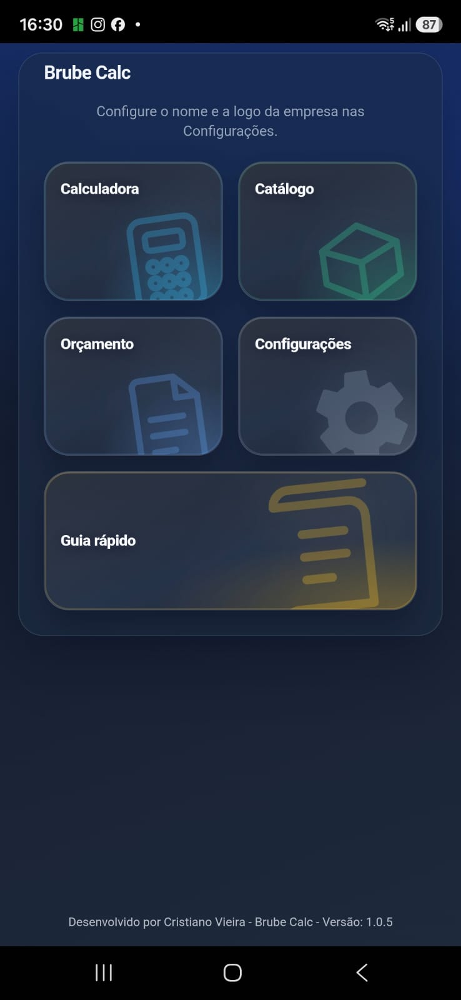
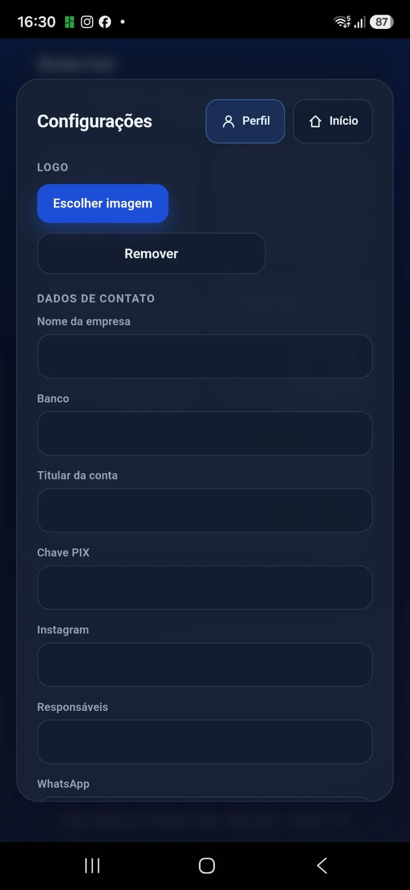
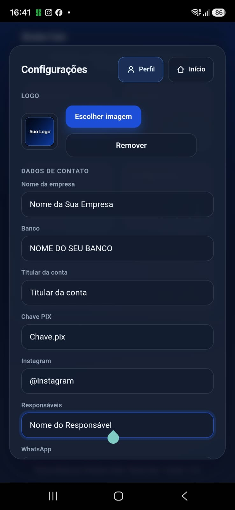
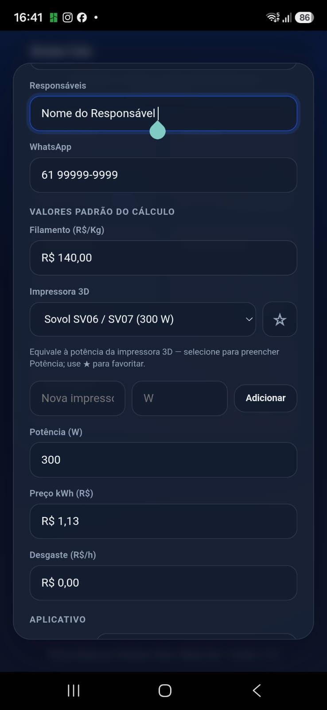
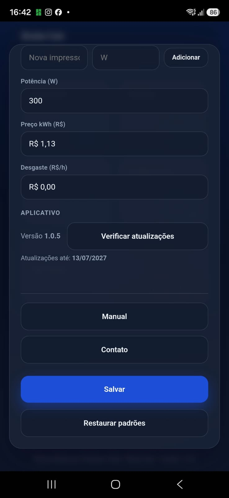
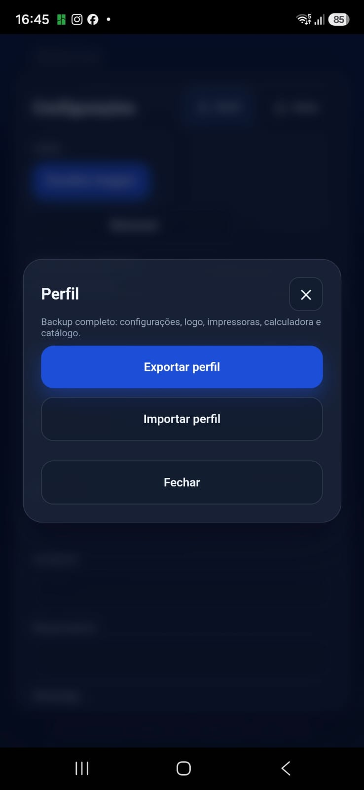
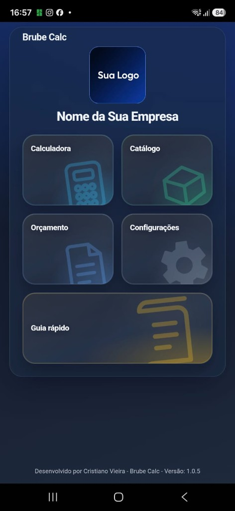

Primeiro uso e backup
Configure logo, dados da empresa e valores de cálculo. Depois use Perfil → Exportar perfil para guardar tudo num arquivo de backup.
Na tela inicial, toque em Configurações (ícone de engrenagem). É por aqui que você cadastra a empresa e acessa o backup do Perfil.

No topo ficam dois botões: Perfil (à esquerda) e Início (à direita).
Na seção Logo, toque em Escolher imagem para colocar a marca da sua empresa (aparece nos orçamentos em PDF).
Em Dados de contato, preencha nome da empresa, banco, PIX, Instagram, responsáveis e WhatsApp. Esses dados entram nos documentos gerados pelo app.

Com a logo e os campos preenchidos, a tela fica assim. Você pode trocar a imagem a qualquer momento ou usar Remover para apagar a logo.

Role a tela até Valores padrão do cálculo. Informe filamento (R$/Kg), escolha ou cadastre a impressora 3D, potência (W), preço do kWh e desgaste (R$/h).
Esses valores servem de base na Calculadora. Você ainda pode alterar números em cada cálculo, se precisar.

No final da tela há a seção Aplicativo (versão e atualizações). Role até o fim e toque em Salvar para gravar tudo no aparelho.
Restaurar padrões volta os valores de cálculo para o padrão do app (não apaga o catálogo).

O botão Perfil fica no canto superior direito da tela Configurações (à esquerda de Início).
Ele não edita nome ou foto de usuário. Ele abre o menu de backup completo do que você já cadastrou no Brube Calc.
Use o Perfil quando quiser:
Toque em Perfil e depois em Exportar perfil (botão azul).
O app gera um arquivo brube-perfil-….json com um backup completo, incluindo:
No Android, o celular abre a tela de compartilhar: salve no Drive, envie por WhatsApp ou guarde numa pasta segura. Guarde esse arquivo em local que você consiga achar depois.

Ao tocar em Salvar e voltar ao Início, a tela principal mostra a logo e o nome da empresa que você cadastrou — em vez da mensagem pedindo para configurar.
